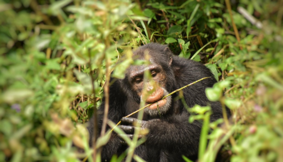
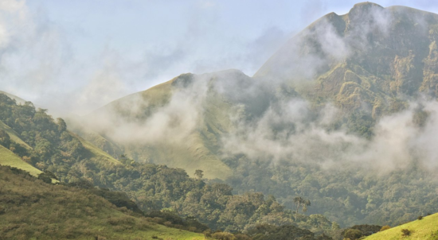
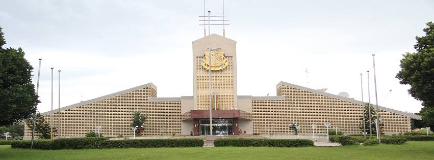
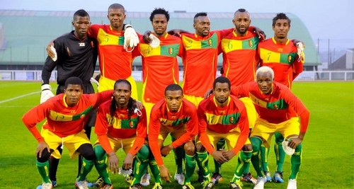
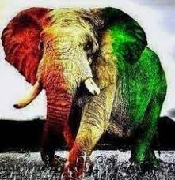
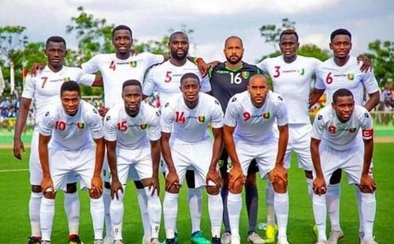
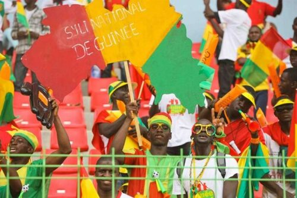
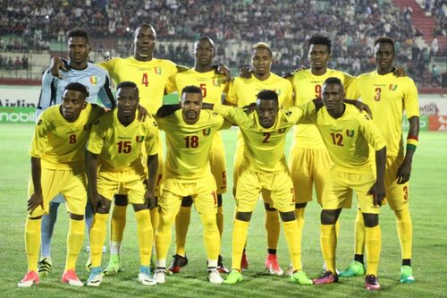
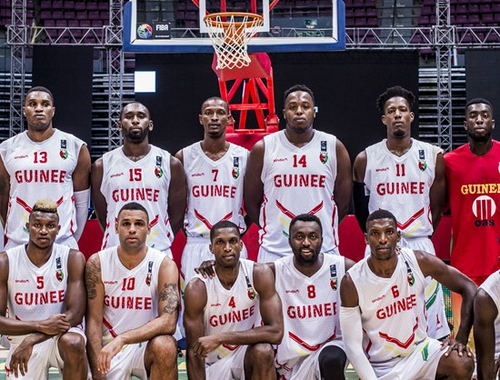

Gine turist dinamizmi düşük olan bir Batı Afrika ülkesidir. Bununla birlikte, bu ülke coğrafi olarak dört tür rahatlama, iklim, fauna, flora ve çok farklı tarihi ve kültürel geleneklere ayrılmıştır ve turist potansiyeline sahiptir.
Doğal kaynaklar açısından zengin, Batı Afrika'nın su kulesi lakaplı ve dünyadaki boksit rezervlerinin üçte birine sahip, “jeolojik skandal” lakaplı. 2 Ekim 1958'de Fransa'dan bağımsızlığını kazandı ve onu Fransız Sahra altı Afrika'sında bunu yapan ilk ülke yaptı.
Fransız kaşif Aimé Olivier de Sanderval (1840-1919) bu zengin çeşitliliği anlamıştı:
"Nehirler ülkesi. Bulutların pamukları arasında parıldayan sakin kurdelelerinizi, uçsuz bucaksız yeşil genişliklerinizi ve çok güçlü ve misafirperver olmayanları sevdim. Sert ve misafirperver dağlarınızı gezdim ve cayanların yaşadığı geniş nehirlerinizi gördüm. Boğucu ormanınıza girdim." kutsal dansın çılgınlığını bulduğu yerde, hala başka yerlerde, sürülerini otlatan güzel bol dökümlü İnsanlarla tanıştım. Ve tüm bunların üzerine, kasırganın patladığını ve yağmurun gri perdesinin yayıldığını gördüm. "dedi.
Nimba Dağı Sıkı Doğa Koruma Alanı, Gine, Liberya ve Fildişi Sahili sınırlarında bulunan bir doğa koruma alanıdır. 1981'den beri, biyosfer rezervi1 ve UNESCO dünya mirası alanı2 olarak sınıflandırılıyor. Rezerv, çevredeki savanlara hakim olan ve yamaçları yoğun ormanlarla kaplı olan Nimba Dağı'nda (1.752 m) bulunmaktadır. Bu orman, canlı kurbağa gibi endemik türler ile özellikle zengin flora ve faunaya ev sahipliği yapmaktadır.  
Ayrıca, dünyanın en büyük boksit rezervleri ve en büyük yüksek kaliteli demir cevheri rezervlerinin yanı sıra altın ve elmas rezervlerine sahip, 2016 yılında yaklaşık 12,9 milyon nüfusa sahip bir ülkedir. Ek olarak, Gine verimli topraklara, yoğun yağışlara sahiptir ve Senegal Nehri, Nijer Nehri ve Gambiya Nehri gibi birkaç Batı Afrika nehrinin kaynağıdır. Gine'nin hidroelektrik potansiyeli çok büyük ve ülke önemli bir elektrik ihracatçısı olabilir. Ülke aynı zamanda muazzam bir tarımsal potansiyele sahiptir. Altın, boksit ve elmas, Gine'nin ana ihraç ürünleridir. Uluslararası yatırımcılar, Gine'nin gelecekteki büyümesini destekleyebilecek Gine'nin kullanılmayan maden rezervlerine ilgi gösterdi.
Başkent Conakry’de yer alan saray, ülkenin sembol yapıları arasında yer alır. Turistik öneme sahip olan saray, başkentin görülmesi gereken güzellikleri arasında yerini alır.

Ülkenin en sevilen spor dalı futboldur. Gine futbol millî takımı uluslararası alanda herhangi bir başarı göstermemiş olsa da ülke genelinde ilgi gören bir konumdadır. Le Sylli National olarak adlandırılan sembolü fildir Gine millî futbol takımının en büyük başarısı 1976 yılında Etiyopya'da gerçekleştirilen Afrika Uluslar Kupası'nda elde edilen ikincilik olmuştur.
Ülke futbolu 1960 yılında kurulan Gine Futbol Federasyonu (Fédération Guinéenne de Football) tarafından yönetilmektedir. Gine millî futbol takımı Aralık 2006'da FIFA sıralamasında en büyük başarısını elde ederek genel sıralamada 23. sırayı elde etmiştir.
|   |
|   |
|   |